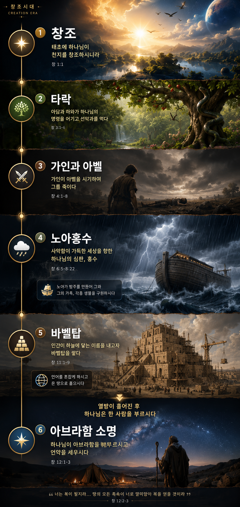

창조시대 Matrix
창조에서 바벨탑, 그리고 아브라함 소명까지
개요
처음

도트와 허브를 터치하세요
✦
🌳
⚔️
🌧️
🧱
★
✨
🍎
⚖️
🌈
🌍
허브 바로가기
✨ 창조 허브
창조, 형상, 안식, 새창조
🍎 타락 허브
죄의 시작과 에덴 추방
⚖️ 심판 허브
가인, 홍수, 바벨탑
🌈 언약 허브
여자의 후손, 방주, 무지개
🌍 열방 허브
바벨탑, 언어 혼잡, 열방 분산
🔗 연결탐험
성막, 십자가, 오순절, 새예루살렘
✨
창조
🍎
타락
⚖️
심판
🌈
언약
🌍
열방
×
선택됨